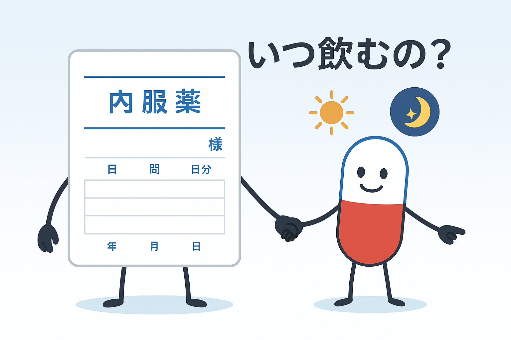
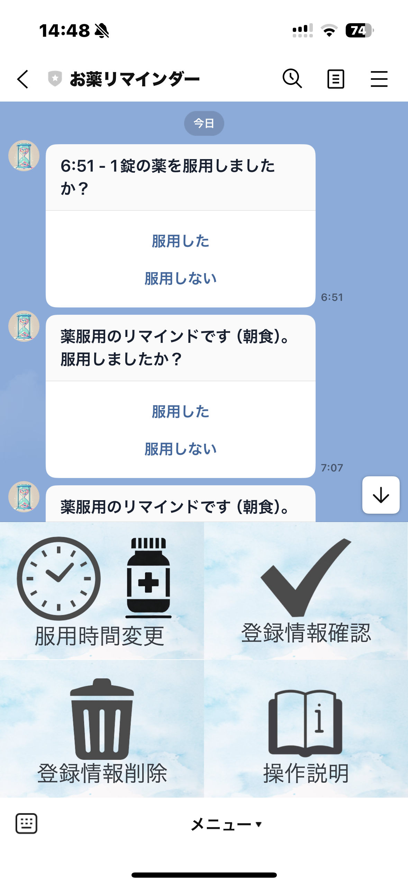

🧠 お薬パートナーとは？
「お薬パートナー」は、LINEを使って薬の飲み忘れを防ぐサポートシステムです。 登録が完了すると、設定された時間にLINEで服薬通知が届き、「服用した」「服用しない」ボタンで服薬確認ができます。

📋 主な機能
- カメラによる「薬情報登録機能」： 処方袋の写真を送ると、時間帯を自動で登録！（朝・昼・夜・就寝・毎食の文字が必要）
- 「服用時間変更」ボタン： 朝食・昼食・夕食・就寝の時間帯に変更可能！例：「変更時間帯 8:00」
- 「登録情報確認」ボタン： 現在の薬の服用時間や内容をチェック！
- 「登録情報削除」ボタン： 番号を送るだけで簡単削除！
- 「手動登録」ボタン： メッセージを送信することでも薬の情報を登録可能！
- 「詳細情報登録」ボタン： 薬の名前や処方された時期などを後から追加で登録が可能！
- 「操作説明」ボタン： 使い方をいつでも確認できます♪
⚙️ その他の便利機能
- 時間帯に応じたリマインダーを自動送信
- すべてLINEで完結。アプリのインストール不要♪
📘 システム適応範囲
- 写真から登録できるのは「服用時間」だけ！シンプルでわかりやすい設計です♪
- 時間は「朝食」「昼食」「夕食」「就寝」の4つに分かれていて、それぞれ自由に設定OK！
- 処方袋に載っている薬は1袋に1つだけ。しかもプリンタで印刷された読みやすい文字ならバッチリ読み取ります✨
🔗 LINEで始めよう！
下のボタンをクリックして、「お薬パートナー」と一緒に毎日安心生活をスタート♪

❓ よくある質問
- Q: 写真を送ると必ず登録できますか？
A: 印刷された薬袋の文字であれば高精度で読み取ります。 - Q: 手動で薬は登録できますか？
A: はい、「薬登録」と送信し、次に「朝食 花粉の薬」のように入力します。 - Q: 薬の追加情報は変更できますか？
A: 「追加情報」と送信すると、備考を上書きできます。
🌱 使う人の声
「薬を飲み忘れがちだったけど、LINEで通知が来るから忘れず飲めるようになった！
しかも見た目もかわいくて、毎日がちょっと楽しみです ☺️」